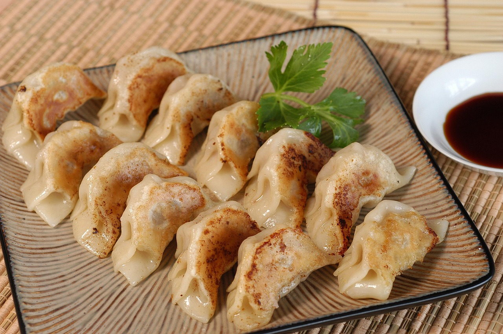

Back
Gyoza

Description
Gyoza is a type of Japanese dumplings, with juicy meat filling inside of dumpling wrappers.Originating from Chinese jiaozi dumplings, they have become a mainstay of Japanese recipes. It's very popular in and outside of Japan.
In the United States, you can find them at Japanese restaurants and Asian-themed restaurants. They are often served as an appetizer, or part of a combo meal or in a bento box. For an extra burst of umami, consider adding a shoyu egg alongside your gyoza.
Ingredients
- Gyoza wrapper, store-bought
- Oil
- Water
- Ground pork
- Cabbage
- Ginger
- Garlic
- Soy Sauce
- Sake
- White Pepper
- Sesame oil
- Chopped Scallion
- Salt
- Japanese Ponzu
Steps
- In a bowl, combine all the ingredients in the Filling and blend well. The Filling should be sticky and cohesive.
- To make Gyoza Sauce, combine the Ponzu with the sesame oil in a small dipping bowl. Stir to blend well.
- o assemble the gyoza, place a piece of the gyoza wrapper on your palm or a flat surface. Spoon about 1 teaspoon of the filling onto the center of the wrapper. Dip your index finger into some water and moisten the outer edges of the dumpling wrapper.
- Fold the gyoza over, press, and seal the left end. Use your thumb and index finger to create pleats and pinch to secure tightly. Repeat the process to form more pleats (start with 3-4 pleats if you're a beginner). A nicely wrapped gyoza should have a crescent shape.
- Heat the oil in a skillet or stir-fry pan over medium heat. Arrange the gyoza in the pan and cover with a lid. Pan-fry the gyoza until the bottoms turn golden brown and crispy.
- Add about 1/4 inch of water to the skillet or stir-fry pan and cover with the lid immediately. The water should evaporate after a few minutes. Continue to cook the gyoza for a couple more minutes to crisp up the bottoms. Remove the gyoza from the skillet or stir-fry pan and serve immediately with the gyoza sauce.